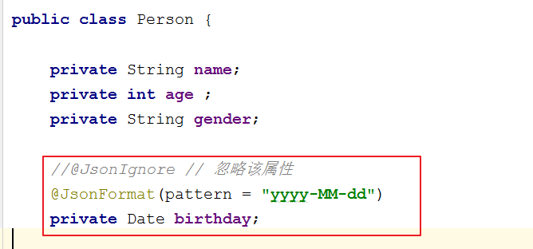

02-Jquery高级一. 今日目标二. 今日内容(一) 事件绑定1. 标准绑定方式2. on/off绑定方式3. 事件切换4. 案例练习案例一:广告显示和隐藏案例二: 抽奖(二) 插件：增强JQuery的功能1. $.fn.extend(object)2. $.extend(object)3. 常用插件表单校验分页工具条(三) 异步AJAX1. AJAX相关概念2. 传统JS实现方式3. jQuery封装的Ajax操作$.ajax()$.get()$.post()4. JSON简介基本语法获取数据5. JSON数据和JAVA对象转换JSON解析器Java对象转换JSON使用步骤注解使用复杂java对象转换示例代码JSON转为Java对象步骤示例(四) 案例:校验用户名1. 需求分析2. 代码实现客户端服务端
基本用法
* jq对象.事件方法(回调函数)；* 注：如果调用事件方法，不传递回调函数，则会触发浏览器默认行为。- 表单对象.submit();//让表单提交
示例
x<html><head> <meta charset="UTF-8"> <title></title> <script src="../js/jquery-3.3.1.min.js" type="text/javascript" charset="utf-8"></script> <script type="text/javascript"> $(function () { //1.获取name对象，绑定click事件 /*$("#name").click(function () { alert("我被点击了...") });*/ //给name绑定鼠标移动到元素之上事件。绑定鼠标移出事件 /*$("#name").mouseover(function () { alert("鼠标来了...") }); $("#name").mouseout(function () { alert("鼠标走了...") });*/ /* //简化操作，链式编程 $("#name").mouseover(function () { alert("鼠标来了...") }).mouseout(function () { alert("鼠标走了...") });*/ alert("我要获得焦点了...") //$("#name").focus();//让文本输入框获得焦点 //表单对象.submit();//让表单提交 }); </script></head><body><input id="name" type="text" value="绑定点击事件"></body></html>基本用法
xxxxxxxxxx* jq对象.on("事件名称",回调函数)* jq对象.off("事件名称")* 如果off方法不传递任何参数，则将组件上的所有事件全部解绑
示例
xxxxxxxxxx<html><head> <meta charset="UTF-8"> <title></title> <script src="../js/jquery-3.3.1.min.js" type="text/javascript" charset="utf-8"></script> <script type="text/javascript"> $(function () { //1.使用on给按钮绑定单击事件 click $("#btn").on("click",function () { alert("我被点击了。。。") }) ; //2. 使用off解除btn按钮的单击事件 $("#btn2").click(function () { //解除btn按钮的单击事件 //$("#btn").off("click"); $("#btn").off();//将组件上的所有事件全部解绑 }); }); </script></head><body><input id="btn" type="button" value="使用on绑定点击事件"><input id="btn2" type="button" value="使用off解绑点击事件"></body></html>基本用法
xxxxxxxxxx* jq对象.toggle(fn1,fn2...)* 当单击jq对象对应的组件后，会执行fn1.第二次点击会执行fn2.....* 注意：1.9版本 .toggle() 方法删除,jQuery Migrate（迁移）插件可以恢复此功能。<script src="../js/jquery-migrate-1.0.0.js" type="text/javascript" charset="utf-8"></script>
示例
xxxxxxxxxx<html><head> <meta charset="UTF-8"> <title></title> <script src="../js/jquery-3.3.1.min.js" type="text/javascript" charset="utf-8"></script> <script src="../js/jquery-migrate-1.0.0.js" type="text/javascript" charset="utf-8"></script> <script type="text/javascript"> $(function () { //获取按钮，调用toggle方法 $("#btn").toggle(function () { //改变div背景色backgroundColor 颜色为 green $("#myDiv").css("backgroundColor","green"); },function () { //改变div背景色backgroundColor 颜色为 pink $("#myDiv").css("backgroundColor","pink"); }); }); </script></head><body> <input id="btn" type="button" value="事件切换"> <div id="myDiv" style="width:300px;height:300px;background:pink"> 点击按钮变成绿色，再次点击红色 </div></body></html>xxxxxxxxxx<html><head> <meta charset="UTF-8"> <title>广告的自动显示与隐藏</title> <style> #content{width:100%;height:500px;background:#999} </style> <!--引入jquery--> <script type="text/javascript" src="../js/jquery-3.3.1.min.js"></script> <script> /* 需求： 1. 当页面加载完，3秒后。自动显示广告 2. 广告显示5秒后，自动消失。 分析： 1. 使用定时器来完成。setTimeout (执行一次定时器) 2. 分析发现JQuery的显示和隐藏动画效果其实就是控制display 3. 使用 show/hide方法来完成广告的显示 */ //入口函数，在页面加载完成之后，定义定时器，调用这两个方法 $(function () { //定义定时器，调用adShow方法 3秒后执行一次 setTimeout(adShow,3000); //定义定时器，调用adHide方法，8秒后执行一次 setTimeout(adHide,8000); }); //显示广告 function adShow() { //获取广告div，调用显示方法 $("#ad").show("slow"); } //隐藏广告 function adHide() { //获取广告div，调用隐藏方法 $("#ad").hide("slow"); } </script></head><body><!-- 整体的DIV --><div> <!-- 广告DIV --> <div id="ad" style="display: none;"> <img style="width:100%" src="../img/adv.jpg" /> </div> <!-- 下方正文部分 --> <div id="content"> 正文部分 </div></div></body></html>xxxxxxxxxx<html><head> <meta charset="UTF-8"> <title>jquery案例之抽奖</title> <script type="text/javascript" src="../js/jquery-3.3.1.min.js"></script> <script language='javascript' type='text/javascript'> /* 分析： 1. 给开始按钮绑定单击事件 1.1 定义循环定时器 1.2 切换小相框的src属性 * 定义数组，存放图片资源路径 * 生成随机数。数组索引 2. 给结束按钮绑定单击事件 1.1 停止定时器 1.2 给大相框设置src属性 */ var imgs = ["../img/man00.jpg", "../img/man01.jpg", "../img/man02.jpg", "../img/man03.jpg", "../img/man04.jpg", "../img/man05.jpg", "../img/man06.jpg", ]; var startId;//开始定时器的id var index;//随机角标 $(function () { //处理按钮是否可以使用的效果 $("#startID").prop("disabled",false); $("#stopID").prop("disabled",true); //1. 给开始按钮绑定单击事件 $("#startID").click(function () { // 1.1 定义循环定时器 20毫秒执行一次 startId = setInterval(function () { //处理按钮是否可以使用的效果 $("#startID").prop("disabled",true); $("#stopID").prop("disabled",false); //1.2生成随机角标 0-6 index = Math.floor(Math.random() * 7);//0.000--0.999 --> * 7 --> 0.0-----6.9999 //1.3设置小相框的src属性 $("#img1ID").prop("src",imgs[index]); },20); }); //2. 给结束按钮绑定单击事件 $("#stopID").click(function () { //处理按钮是否可以使用的效果 $("#startID").prop("disabled",false); $("#stopID").prop("disabled",true); // 1.1 停止定时器 clearInterval(startId); // 1.2 给大相框设置src属性 $("#img2ID").prop("src",imgs[index]).hide(); //显示1秒之后 $("#img2ID").show(1000); }); }); </script></head><body><!-- 小像框 --><div style="border-style:dotted;width:160px;height:100px"> <img id="img1ID" src="../img/man00.jpg" style="width:160px;height:100px"/></div><!-- 大像框 --><div style="border-style:double;width:800px;height:500px;position:absolute;left:500px;top:10px"> <img id="img2ID" src="../img/man00.jpg" width="800px" height="500px"/></div><!-- 开始按钮 --><input id="startID" type="button" value="点击开始" style="width:150px;height:150px;font-size:22px"><!-- 停止按钮 --><input id="stopID" type="button" value="点击停止" style="width:150px;height:150px;font-size:22px"></body></html>增强通过Jquery获取的对象的功能 例如:$("#id")
xxxxxxxxxx<html><head> <meta charset="UTF-8"> <title>01-jQuery对象进行方法扩展</title> <script src="../js/jquery-3.3.1.min.js" type="text/javascript" charset="utf-8"></script> <script type="text/javascript"> //使用jquery插件 给jq对象添加2个方法 check()选中所有复选框，uncheck()取消选中所有复选框 //1.定义jqeury的对象插件 $.fn.extend({ //定义了一个check()方法。所有的jq对象都可以调用该方法 check:function () { //让复选框选中 //this:调用该方法的jq对象 this.prop("checked",true); }, uncheck:function () { //让复选框不选中 this.prop("checked",false); } }); $(function () { // 获取按钮 //$("#btn-check").check(); //复选框对象.check(); $("#btn-check").click(function () { //获取复选框对象 $("input[type='checkbox']").check(); }); $("#btn-uncheck").click(function () { //获取复选框对象 $("input[type='checkbox']").uncheck(); }); }); </script></head><body><input id="btn-check" type="button" value="点击选中复选框" onclick="checkFn()"><input id="btn-uncheck" type="button" value="点击取消复选框选中" onclick="uncheckFn()"><br/><input type="checkbox" value="football">足球<input type="checkbox" value="basketball">篮球<input type="checkbox" value="volleyball">排球</body></html>增强JQeury对象自身的功能 $/jQuery
xxxxxxxxxx<html><head> <meta charset="UTF-8"> <title>01-jQuery对象进行方法扩展</title> <script src="../js/jquery-3.3.1.min.js" type="text/javascript" charset="utf-8"></script> <script type="text/javascript"> //对全局方法扩展2个方法，扩展min方法：求2个值的最小值；扩展max方法：求2个值最大值 $.extend({ max:function (a,b) { //返回两数中的较大值 return a >= b ? a:b; }, min:function (a,b) { //返回两数中的较小值 return a <= b ? a:b; } }); //调用全局方法 var max = $.max(4,3); //alert(max); var min = $.min(1,2); alert(min); </script></head><body></body></html>xxxxxxxxxxASynchronous JavaScript And XML 异步的JavaScript 和 XMLAjax 是一种在无需重新加载整个网页的情况下，能够更新部分网页的技术。通过在后台与服务器进行少量数据交换，Ajax 可以使网页实现异步更新。 这意味着可以在不重新加载整个网页的情况下，对网页的某部分进行更新。 传统的网页（不使用 Ajax）如果需要更新内容，必须重载整个网页页面。异步和同步:客户端和服务器端相互通信的基础上* 客户端必须等待服务器端的响应。在等待的期间客户端不能做其他操作。* 客户端不需要等待服务器端的响应。在服务器处理请求的过程中，客户端可以进行其他的操作。
xxxxxxxxxx<html lang="en"><head> <meta charset="UTF-8"> <title>Title</title> <script> //定义方法 function fun() { //发送异步请求 //1.创建核心对象 var xmlhttp; if (window.XMLHttpRequest) {// code for IE7+, Firefox, Chrome, Opera, Safari xmlhttp = new XMLHttpRequest(); } else {// code for IE6, IE5 xmlhttp = new ActiveXObject("Microsoft.XMLHTTP"); } //2. 建立连接 /* 参数: 1. 请求方式:GET、POST * get方式，请求参数在URL后边拼接。send方法为空参 * post方式，请求参数在send方法中定义 2. 请求的URL: 3. 同步或异步请求:true（异步）或 false（同步） */ xmlhttp.open("GET", "ajaxServlet?username=tom", true); //3.发送请求 xmlhttp.send(); //4.接受并处理来自服务器的响应结果 //获取方式 :xmlhttp.responseText //什么时候获取？当服务器响应成功后再获取 //当xmlhttp对象的就绪状态改变时，触发事件onreadystatechange。 xmlhttp.onreadystatechange = function () { //判断readyState就绪状态是否为4，判断status响应状态码是否为200 if (xmlhttp.readyState == 4 && xmlhttp.status == 200) { //获取服务器的响应结果 var responseText = xmlhttp.responseText; alert(responseText); } } } </script></head><body><input type="button" value="发送异步请求" onclick="fun();"><input></body></html>参数及含义:参数太多就不一一列举了,这里列举几个常用的,剩下的可以去文档中查询
| 参数 | 类型 | 是否必选 | 说明 |
|---|---|---|---|
| type | 请求方式 | 否 | (默认: "GET") 请求方式 ("POST" 或 "GET")， 默认为 "GET"。 |
| url | String | 是 | 请求的路径 |
| data | key-value/String | 否 | 发送至服务器的 key/value 数据 |
| success | 函数 | 否 | 请求成功后的回调函数。参数:由服务器返回，并根据dataType参数进行处理后的数据 |
| dataType | String | 否 | 预期服务器返回的数据类型。如果不指定，jQuery 将自动根据 HTTP 包 MIME 信息来智能判断，比如XML MIME类型就被识别为XML |
代码示例
xxxxxxxxxx<script type="text/javascript" src="/javaweb_ajax01/js/jquery-1.8.3.min.js"></script><script type="text/javascript">$(function(){ //确定事件 绑定事件 $("#username").blur(function(){ //获取用户输入的用户名 var uv = $(this).val(); //发送异步请求 $.ajax({ type: "get", //请求方式 url: "/javaweb_ajax01/isExist", //请求路径 data: {username:uv}, //请求参数 success: function(msg){ //响应成功之后的回调函数 参数msg就是响应的数据相当于responseText和responseXML //更新页面 $("#usernameMsg").html(msg) ; } }); })});</script>参数及含义:
| 参数 | 类型 | 是否必选 | 说明 |
|---|---|---|---|
| url | String | 是 | 待装入 HTML 网页网址 |
| data | key-value/String | 否 | 发送至服务器的 key/value 数据 |
| callback | 函数 | 否 | 请求成功时回调函数 |
| type | String | 否 | 预期服务器响应的数据类型:xml, html, script, json, text, _default |
代码示例
xxxxxxxxxx<script type="text/javascript" src="/javaweb_ajax01/js/jquery-1.8.3.min.js"></script><script type="text/javascript">$(function(){ //确定事件 绑定事件 $("#username").blur(function(){ //获取用户输入的用户名 var uv = $(this).val(); //发送异步请求 var url = "/javaweb_ajax01/isExist"; var params = {username:uv}; $.get(url,params,function(data){ //data代表响应的数据,相当于responseText和responseXML //更新页面 $("#usernameMsg").html(data); },"html"); })});</script>参数及含义:
| 参数 | 类型 | 是否必选 | 说明 |
|---|---|---|---|
| url | String | 是 | 待装入 HTML 网页网址 |
| data | key-value/String | 否 | 发送至服务器的 key/value 数据 |
| callback | 函数 | 否 | 请求成功时回调函数 |
| type | String | 否 | 预期服务器响应的数据类型:xml, html, script, json, text, _default |
代码示例
xxxxxxxxxx<script type="text/javascript" src="/javaweb_ajax01/js/jquery-1.8.3.min.js"></script><script type="text/javascript">$(function(){ //确定事件 绑定事件 $("#username").blur(function(){ //获取用户输入的用户名 var uv = $(this).val(); //发送异步请求 var url = "/javaweb_ajax01/isExist"; var params = {username:uv}; $.post(url,params,function(data){ //data代表响应的数据,相当于responseText和responseXML //更新页面 $("#usernameMsg").html(data); },"html"); })});</script>xxxxxxxxxx概念:JavaScript Object Notation ,JavaScript对象表示法var p = {"name":"张三","age":23,"gender":"男"};作用 :* json现在多用于存储和交换文本信息的语法* 进行数据的传输* JSON 比 XML 更小、更快，更易解析。
xxxxxxxxxx* 数据在名称/值对中:json数据是由键值对构成的* 键用引号(单双都行)引起来，也可以不使用引号* 值得取值类型:1. 数字（整数或浮点数）2. 字符串（在双引号中）3. 逻辑值（true 或 false）4. 数组（在方括号中） {"persons":[{},{}]}5. 对象（在花括号中） {"address":{"province":"陕西"....}}6. null* 数据由逗号分隔:多个键值对由逗号分隔* 花括号保存对象:使用{}定义json 格式* 方括号保存数组:[]
示例
xxxxxxxxxx<script> //1.定义基本格式 var person = {"name": "张三", age: 23, 'gender': true}; //alert(person); //2.嵌套格式 {}———> [] var persons = { "persons": [ {"name": "张三", "age": 23, "gender": true}, {"name": "李四", "age": 24, "gender": true}, {"name": "王五", "age": 25, "gender": false} ] }; alert(persons); //2.嵌套格式 []———> {} var ps = [{"name": "张三", "age": 23, "gender": true}, {"name": "李四", "age": 24, "gender": true}, {"name": "王五", "age": 25, "gender": false}];</script>取值方式
xxxxxxxxxx1. json对象.键名2. json对象["键名"]3. 数组对象[索引]4. 遍历
示例
xxxxxxxxxx<script> //1.定义基本格式 var person = {"name": "张三", age: 23, 'gender': true}; alert(person); //获取name的值 var name1 = person.name; var name2 = person["name"]; alert(name1+" "+name2); //2.嵌套格式 {}———> [] var persons = { "persons": [ {"name": "张三", "age": 23, "gender": true}, {"name": "李四", "age": 24, "gender": true}, {"name": "王五", "age": 25, "gender": false} ] }; alert(persons); //获取王五值 var name3 = persons.persons[2].name; alert(name3); //2.嵌套格式 []———> {} var ps = [{"name": "张三", "age": 23, "gender": true}, {"name": "李四", "age": 24, "gender": true}, {"name": "王五", "age": 25, "gender": false}]; //获取李四值 alert(ps); alert(ps[1].name); 获取person对象中所有的键和值 //for in 循环 for(var key in person){ //这样的方式获取不行。因为相当于 person."name" //alert(key + ":" + person.key); alert(key+":"+person[key]); } //获取ps中的所有值 for (var i = 0; i < ps.length; i++) { var p = ps[i]; for(var key in p){ alert(key+":"+p[key]); } }</script>xxxxxxxxxx常见的解析器:Jsonlib，Gson，fastjson，jackson
xxxxxxxxxx1. 导入jackson的相关jar包2. 创建Jackson核心对象 ObjectMapper3. 调用ObjectMapper的相关方法进行转换* writeValue(参数1，obj):参数1:File:将obj对象转换为JSON字符串，并保存到指定的文件中Writer:将obj对象转换为JSON字符串，并将json数据填充到字符输出流中OutputStream:将obj对象转换为JSON字符串，并将json数据填充到字节输出流中* writeValueAsString(obj):将对象转为json字符串
xxxxxxxxxx1. @JsonIgnore:排除属性。2. @JsonFormat:属性值得格式化* @JsonFormat(pattern = "yyyy-MM-dd")

xxxxxxxxxx1. List:数组2. Map:对象格式一致
xxxxxxxxxx//Java对象转为JSON字符串,写入到文本中public void test1() throws Exception { //1.创建Person对象 Person p = new Person(); p.setName("张三"); p.setAge(23); p.setGender("男"); //2.创建Jackson的核心对象 ObjectMapper ObjectMapper mapper = new ObjectMapper(); //3.转换 //writeValue，将数据写到d://a.txt文件中 //mapper.writeValue(new File("d://a.txt"),p); //writeValue.将数据关联到Writer中 mapper.writeValue(new FileWriter("d://b.txt"),p);}//对象转化为JSONpublic void test2() throws Exception { //1.创建Person对象 Person p = new Person(); p.setName("张三"); p.setAge(23); p.setGender("男"); p.setBirthday(new Date()); //2.转换 ObjectMapper mapper = new ObjectMapper(); String json = mapper.writeValueAsString(p); System.out.println(json);//{"name":"张三","age":23,"gender":"男","birthday":1530958029263} //{"name":"张三","age":23,"gender":"男","birthday":"2018-07-07"}}//对象集合转化为JSONpublic void test3() throws Exception { //1.创建Person对象 Person p = new Person(); p.setName("张三"); p.setAge(23); p.setGender("男"); p.setBirthday(new Date()); Person p1 = new Person(); p1.setName("张三"); p1.setAge(23); p1.setGender("男"); p1.setBirthday(new Date()); Person p2 = new Person(); p2.setName("张三"); p2.setAge(23); p2.setGender("男"); p2.setBirthday(new Date()); //创建List集合 List<Person> ps = new ArrayList<Person>(); ps.add(p); ps.add(p1); ps.add(p2); //2.转换 ObjectMapper mapper = new ObjectMapper(); String json = mapper.writeValueAsString(ps); // [{},{},{}] //[{"name":"张三","age":23,"gender":"男","birthday":"2018-07-07"},{"name":"张三","age":23,"gender":"男","birthday":"2018-07-07"},{"name":"张三","age":23,"gender":"男","birthday":"2018-07-07"}] System.out.println(json);}//Map集合转化为JSONpublic void test4() throws Exception { //1.创建map对象 Map<String,Object> map = new HashMap<String,Object>(); map.put("name","张三"); map.put("age",23); map.put("gender","男"); //2.转换 ObjectMapper mapper = new ObjectMapper(); String json = mapper.writeValueAsString(map); //{"name":"张三","age":23,"gender":"男"} System.out.println(json);//{"gender":"男","name":"张三","age":23}}xxxxxxxxxx1. 导入jackson的相关jar包2. 创建Jackson核心对象 ObjectMapper3. 调用ObjectMapper的相关方法进行转换* readValue(json字符串数据,Class)
xxxxxxxxxx//演示 JSON字符串转为Java对象public void test5() throws Exception { //1.初始化JSON字符串 String json = "{\"gender\":\"男\",\"name\":\"张三\",\"age\":23}"; //2.创建ObjectMapper对象 ObjectMapper mapper = new ObjectMapper(); //3.转换为Java对象 Person对象 Person person = mapper.readValue(json, Person.class); System.out.println(person);}xxxxxxxxxx服务器响应的数据，在客户端使用时，要想当做json数据格式使用。有两种解决方案:1. $.get(type):将最后一个参数type指定为"json"2. 在服务器端设置MIME类型response.setContentType("application/json;charset=utf-8");
xxxxxxxxxx<html lang="en"><head> <meta charset="UTF-8"> <title>注册页面</title> <script src="js/jquery-3.3.1.min.js"></script> <script> //在页面加载完成后 $(function () { //给username绑定blur事件 $("#username").blur(function () { //获取username文本输入框的值 var username = $(this).val(); //发送ajax请求 //期望服务器响应回的数据格式：{"userExsit":true,"msg":"此用户名太受欢迎,请更换一个"} // {"userExsit":false,"msg":"用户名可用"} $.get("findUserServlet",{username:username},function (data) { //判断userExsit键的值是否是true // alert(data); var span = $("#s_username"); if(data.userExsit){ //用户名存在 span.css("color","red"); span.html(data.msg); }else{ //用户名不存在 span.css("color","green"); span.html(data.msg); } }); }); }); </script></head><body> <form> <input type="text" id="username" name="username" placeholder="请输入用户名"> <span id="s_username"></span> <br> <input type="password" name="password" placeholder="请输入密码"><br> <input type="submit" value="注册"><br> </form></body></html>xxxxxxxxxx("/findUserServlet")public class FindUserServlet extends HttpServlet { protected void doPost(HttpServletRequest request, HttpServletResponse response) throws ServletException, IOException { //1.获取用户名 String username = request.getParameter("username"); //2.调用service层判断用户名是否存在 //期望服务器响应回的数据格式：{"userExsit":true,"msg":"此用户名太受欢迎,请更换一个"} // {"userExsit":false,"msg":"用户名可用"} //设置响应的数据格式为json response.setContentType("application/json;charset=utf-8"); Map<String,Object> map = new HashMap<String,Object>(); if("tom".equals(username)){ //存在 map.put("userExsit",true); map.put("msg","此用户名太受欢迎,请更换一个"); }else{ //不存在 map.put("userExsit",false); map.put("msg","用户名可用"); } //将map转为json，并且传递给客户端 //将map转为json ObjectMapper mapper = new ObjectMapper(); //并且传递给客户端 mapper.writeValue(response.getWriter(),map); }}